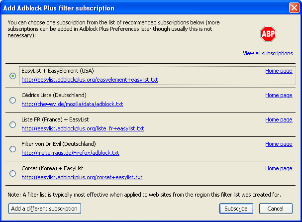

Profiling Firefox Extensions I have installed
- My Current Firefox Extensions: A-Z*
Adblock Plus; because ads are for people that don’t know how to avoid them! Not only do they stop your banwidth from being wasted; they make a ton of websites more usuable. It takes care of Flash Ads as well as static ones; using a filter that is constantly updated. So even if some of the webs more devious and sneaky advertisers try to circumvent it; AdBlock can have a fix to everyone online within hours. It is definately my favourite extension! I don’t block certain ads like Google, Yahoo, Microsoft (the ones with decent reputations) as that is how the people behind really good websites I frequent make a living. But for all the rest trying to do pop-ups and pop-unders; I am sorry your days are numbered! (Some people higly recommend flashblock but I haven’t had a need to use it with AdBlock Plus yet).

{kind=link}
CustomizeGoogle adds neat tricks to Google services such as always using a secure connection to Gmail; links to other search engines, page histories, Favicons to search and streaming results pages. Comes in handy once in a while; but I don’t use it daily.
FireGPG adds the full encryption and signing power of PGP to your Firefox browser. They have built in buttons for Gmail and right click options to sign, decrypt, encrypt and much more. A must have for privacy-aware people out there. Only downside is you need to create a Web of Trust with the keys you choose to use.
{kind=link}
Foxmarks: synchronises your bookmarks, passwords accross any computer with Firefox installed (they have plans for Internet Explorer and Safari). It is definately my most used extension; comes in handy almost daily. I use a lot of different computers; and Foxmarks keeps them all in sync! Only thing they are missing is extension syncing (while keeping your preferences); but hopefully that will happen in the future!
{kind=link}
Gears: enables offline access in Google
Reader and Google Docs. I have been hoping for awhile that they would
extend this to gmail; but no such luck yet. It is mildly useful; but I
wouldn’t use it daily.
{kind=link}
PingFire allows you to use Ping.fm service to send quick status messages to Bebo, Facebook, Twitter, Jaiku, Blogger, Wordpress.com and 100’s more. Really useful to alert people to what you are up to!
{kind=link}
SpeedDial: Opera’s innovative approach has been replicated in 100’s of Firefox Add-ons; not least this one. But this is very handy when you have a handful of websites you visit every day. It has a window with squares filled with images of the websites which you most frequent. It makes checking news and your favourites websites a breeze. Customisation options for the tinkerers among us are quite good also….
{kind=link}